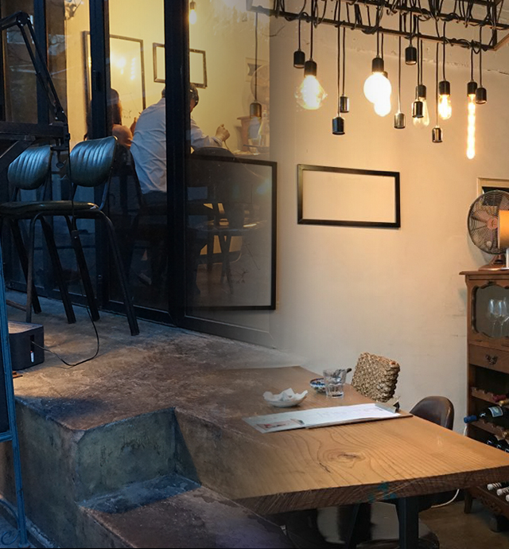
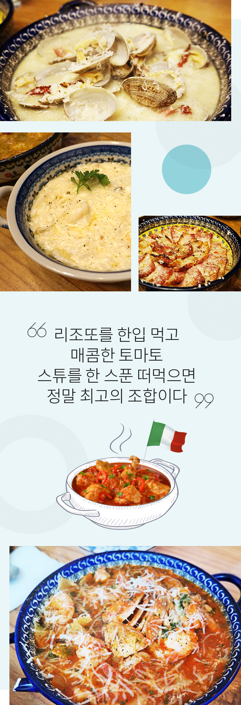

와 제 롤모델이 잡스에요!!! 아이폰 첫 출시되고 나서부터 계속 아이폰 쓰고 있는데 잡스가 너무 그리워요ㅠㅠ 지금은 돈만 벌려고 하는 것 같아서 디자인 발전도 없고ㅠㅠ와 제 롤모델이 잡스에요!!! 아이폰 첫 출시되고 나서부터 계속 아이폰 쓰고 있는데 잡스가 너무 그리워요ㅠㅠ 지금은 돈만 벌려고 하는 것 같아서 디자인 발전도 없고ㅠㅠ와 제 롤모델이 잡스에요!!! 아이폰 첫 출시되고 나서부터 계속 아이폰 쓰고 있는데 잡스가 너무 그리워요ㅠㅠ 지금은 돈만 벌려고 하는 것 같아서 디자인 발전도 없고ㅠㅠ와 제 롤모델이 잡스에요!!! 아이폰 첫 출시되고 나서부터 계속 아이폰 쓰고 있는데 잡스가 너무 그리워요ㅠㅠ 지금은 돈만 벌려고 하는 것 같아서 디자인 발전도 없고ㅠㅠ와 제 롤모델이 잡스에요!!! 아이폰 첫 출시되고 나서부터 계속 아이폰 쓰고 있는데 잡스가 너무 그리워요ㅠㅠ 지금은 돈만 벌려고 하는 것 같아서 디자인 발전도 없고ㅠㅠ
먹스타 맛집
현상인이 소개하는 종로 숨은 맛집
나만 알고 싶은
‘128PAN’
‘128PAN’
맛집 블로거, 먹스타그래머로 알려진 현상인들이 직접 맛집을 소개한다.

최근 ‘원테이블 레스토랑(One Table Restaurant)’이 한 TV 프로그램의 전파를 타면서 많은 사람들의 호기심을 자극했다. 또 원테이블 레스토랑으로 유명한 맛집들이 SNS를 통해 확산되면서 누리꾼 사이에서 인기를 끌고 있다. 원테이블 레스토랑은 말 그대로 레스토랑 내 오직 테이블 하나만 두고 운영하는 소규모 프라이빗 레스토랑이다. 프라이빗 공간에 대한 관심이 높아지면서 원테이블 레스토랑의 인기가 날로 높아지고 있는 것이다. 연지동 사옥 근처에도 단 두 개의 테이블로 운영되는 숨은 맛집이 있다고 하는데, 컨테이너선대기획팀 김윤진 사원이 투테이블 레스토랑 ‘128pan’을 직접 찾아가봤다.
글
김윤진 사원 (컨테이너선대기획팀)
나만 알고 싶은 ‘프라이빗 공간’
지하철 혜화역 1번 출구 쪽 인적 드문 길가에 위치한 ‘128pan’ 레스토랑. 4~6인용 테이블 하나와 2인용 테이블 하나만 준비되어 있는 이곳은 제한적인 공간인 만큼 전화 예약은 필수이다. 비록 협소한 공간이지만 날씨 좋은 날에 방문하면, 창이 활짝 열려 있어 마치 테라스에 앉아 식사하는 듯한 느낌을 받을 수 있다. 최대 두 팀까지 식사가 가능하기 때문에 조용한 분위기에서 개인적인 대화를 나눌 수 있는 것이 가장 큰 장점이다.

실패 없는 최고의 조합
2명이 방문할 경우 풍기 리조또와 토마토 스튜, 두 메뉴의 조합을 추천한다. 128pan의 풍기 리조또는 그 어디서도 경험하지 못한 고소하고 깊은 맛을 낸다. 리조또를 한입 먹고 매콤한 토마토 스튜를 한 스푼 떠먹으면 정말 최고의 조합이다. 토마토 스튜 또한 새우, 게, 닭고기, 파르펠레(리본모양 파스타)가 듬뿍 들어있어 생각보다 양이 많다.
4명이 방문할 경우에는 풍기 리조또와 토마토 스튜는 기본, 여기에 통삼겹 오븐 구이와 바지락 와인찜을 함께 주문해보길 바란다. 고기다운 고기 메뉴가 없으면 항상 아쉬운 법. 통삼겹 오븐 구이 소스에 듬뿍 적셔져 있는 양파를 마치 파스타처럼 들어 올려 고기와 함께 먹으면 된다. 두꺼운 통삼겹은 충분한 포만감을 주고, 밑에 깔려있는 양파는 느끼함을 잡아주는 이 둘은 환상의 케미를 자랑한다. 짭조름한 바지락 와인찜은 안주로도 최고이며, 다른 메뉴와 먹기에도 부담이 없다. 게다가 바지락 와인찜을 주문하면 다 먹고 난 뒤 남은 소스를 베이스로 파스타를 만들어주기 때문에 마치 두 가지 메뉴를 먹는 듯한 느낌을 받을 수 있다.
더 신뢰 가는 ‘오픈 키친’
128pan은 완전한 오픈 키친이다. 냉장고에서 재료를 꺼내는 것부터 플레이팅하는 것까지 조리과정의 처음부터 끝까지 모두를 볼 수 있다. 한 명의 오너 셰프가 식당을 운영하는데, 처음 방문했다고 말하면 메뉴 하나하나 설명해주는 모습에서 세심함을 느낄 수 있다. 또 음식을 할 땐 이어폰을 두 귀에 꽂고 무심한 듯 요리하다, 중간중간 빵이 모자라면 말하라며 다정하게 말을 거는 셰프. 그렇기에 더 부담스럽지 않게 식사를 할 수 있어 좋다. 마지막으로 음식이 나오면 맛있게 먹는 방법을 설명해주는 것도 잊지 않는다.
Info
-

 서울 종로구 동숭4길 14
서울 종로구 동숭4길 14 -

 070-4063-1454 (전화 예약 필수)
070-4063-1454 (전화 예약 필수) -

 12:00 ~ 22:00 (매주 월요일 휴무)
12:00 ~ 22:00 (매주 월요일 휴무) -

 풍기 리조또 ￦14,000, 토마토 스튜 ￦18,000, 통삼겹 오븐 구이 ￦18,000, 바지락 와인찜 ￦20,000
풍기 리조또 ￦14,000, 토마토 스튜 ￦18,000, 통삼겹 오븐 구이 ￦18,000, 바지락 와인찜 ￦20,000
-
최고예요
322
-
좋아요
322
-
슬퍼요
322
-
그저 그래요
322
-
화나요
322